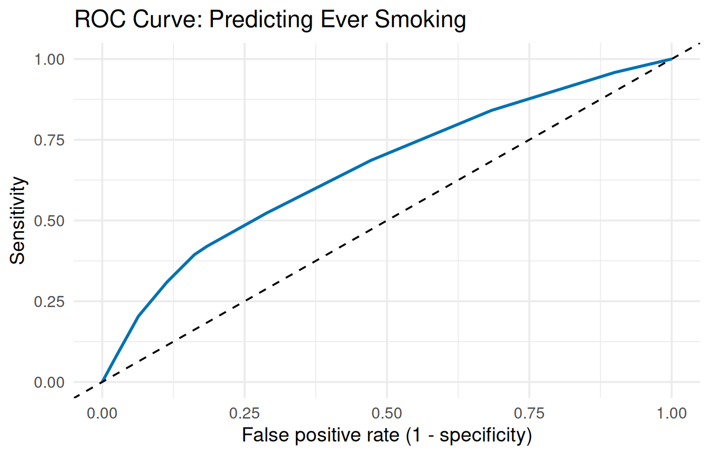

This chapter fits the logistic regression models from Chapter 9 of the textbook and gets the values the textbook uses to judge them: odds ratios with confidence intervals, VIF, predicted probabilities, deviance \(R^2\), the Hosmer-Lemeshow goodness-of-fit test, a confusion matrix, and an ROC curve with its AUC. The function is glm(), which works almost exactly like lm() from Chapters 4 and 5.
Download youth_risk_2007.csv into the same folder as the script. It holds answers from 13,387 high school students to the 2007 Youth Risk Behavior Survey, which you used in Chapter 2. The question in this chapter: which students are more likely to have tried smoking?
The variables used in this chapter:
Variables from youth_risk_2007.csv used in this chapter
Variable
Type
What it records
smoke
Categorical
Lifetime tobacco experimentation indicator (\(1 = \text{yes, has tried smoking cigarettes (even a few puffs)}\), \(0 = \text{no}\)).
ride.alc.driver
Categorical
Riding with a Drunk Driver (RDD) indicator within the past 30 days (\(1 = \text{yes, rode with a driver who had been drinking}\), \(0 = \text{no}\)).
age4
Categorical
The respondent’s age in years, restricted to adolescent age brackets (14, 15, 16, 17, or 18 years old).
age4 holds ages in whole years, so the models below use it as a number: each slope is the change for one more year of age.
9.2 Load the packages and the data
This chapter uses four packages: ggplot2 for the ROC curve’s look, car for VIF, pROC for the ROC curve and its AUC, and DescTools for the Hosmer-Lemeshow test. If any is not installed yet, go back to Install and load packages in Getting Set Up.
# ggplot2 styles the ROC curve, car calculates VIF, and pROC# makes the ROC curve and its AUC.library(ggplot2)library(car)
Loading required package: carData
library(pROC)
Type 'citation("pROC")' for a citation.
Attaching package: 'pROC'
The following objects are masked from 'package:stats':
cov, smooth, var
NoteMessages when car and pROC load
car loads its companion package of example datasets, as in Chapter 5. pROC prints a citation note and says that some of its functions are “masked from ‘package:stats’.” That means pROC has its own versions of three functions with the same names. Nothing in this companion uses them, so you can ignore the message.
# CHANGE THIS: the file name of your dataset, inside the quotes.youth <-read.csv("youth_risk_2007.csv")# The outcome must be coded 0 and 1, with 1 for the event you are# predicting. useNA = "ifany" also counts any missing values.# CHANGE THIS: your outcome variabletable(youth$smoke, useNA ="ifany")
0 1 <NA>
6053 6946 388
The outcome is coded 0 and 1, as logistic regression needs, and 388 students did not answer the question (<NA>).
WarningCommon error: y values must be 0 <= y <= 1
What you see
pressure <-read.csv("smoking_bmi_bp.csv")glm(Smoker ~ BMI, data = pressure, family = binomial)
Error:
! y values must be 0 <= y <= 1
What it means: the outcome is stored as words (Yes and No), not as 0 and 1.
How to fix it: create a 0/1 version of the outcome with ifelse() from Chapter 8, with 1 for the event you are predicting, and use the new column in glm():
glm() takes the outcome before the ~ and the predictor after it, like lm(). Two extra arguments make it a logistic regression that handles missing values:
# 1. SIMPLE LOGISTIC REGRESSION.# glm() is written like lm(): the outcome before the ~, the# predictor after it.# family = binomial makes it a logistic regression (for a 0/1# outcome). Leave it as is.# na.action = na.exclude skips rows with missing values but# keeps their places, so the predictions line up with the# dataset later. Leave it as is.# CHANGE THIS: your outcome, your predictor, your dataset, and a# name for your modelage_model <-glm(smoke ~ age4, data = youth, family = binomial,na.action = na.exclude)summary(age_model)
Call:
glm(formula = smoke ~ age4, family = binomial, data = youth,
na.action = na.exclude)
Coefficients:
Estimate Std. Error z value Pr(>|z|)
(Intercept) -3.68798 0.24027 -15.35 <2e-16 ***
age4 0.23686 0.01485 15.95 <2e-16 ***
---
Signif. codes: 0 '***' 0.001 '**' 0.01 '*' 0.05 '.' 0.1 ' ' 1
(Dispersion parameter for binomial family taken to be 1)
Null deviance: 17890 on 12947 degrees of freedom
Residual deviance: 17631 on 12946 degrees of freedom
(439 observations deleted due to missingness)
AIC: 17635
Number of Fisher Scoring iterations: 4
# The odds ratios: exp() turns each slope into an odds ratio.# CHANGE THIS: your model's nameexp(coef(age_model))
(Intercept) age4
0.02502241 1.26726184
The Coefficients table has the same columns as the textbook’s Table 9.1, apart from the odds ratios, which come next. Read it in two steps:
The slope’s sign and p-value. The Estimate for age4 is 0.237, a log-odds slope: positive, so older students were more likely to have tried smoking, p < .001.
The odds ratio.exp(coef()) turns each slope into an odds ratio. For age4 it is 1.267: each extra year of age multiplies the odds of having tried smoking by 1.27, a 26.7% increase in the odds. Ignore the (Intercept) odds ratio.
The line (439 observations deleted due to missingness) tells you how many students were left out because they were missing the outcome or the predictor.
NoteCheck: the family line
Look for (Dispersion parameter for binomial family taken to be 1) near the bottom of the output. If it says gaussian instead, you left out family = binomial, and R fit an ordinary regression without any error or warning. Add the argument and run the model again.
9.4 Multiple logistic regression
List the predictors after the ~, joined with + signs, as in Chapter 5:
# 2. MULTIPLE LOGISTIC REGRESSION: list the predictors after the# ~, joined with + signs, as in Chapter 5.# CHANGE THIS: your outcome, your predictors, and your datasetyouth_model <-glm(smoke ~ ride.alc.driver + age4, data = youth,family = binomial, na.action = na.exclude)summary(youth_model)
Call:
glm(formula = smoke ~ ride.alc.driver + age4, family = binomial,
data = youth, na.action = na.exclude)
Coefficients:
Estimate Std. Error z value Pr(>|z|)
(Intercept) -3.92948 0.24858 -15.81 <2e-16 ***
ride.alc.driver 1.15835 0.04153 27.89 <2e-16 ***
age4 0.23080 0.01533 15.05 <2e-16 ***
---
Signif. codes: 0 '***' 0.001 '**' 0.01 '*' 0.05 '.' 0.1 ' ' 1
(Dispersion parameter for binomial family taken to be 1)
Null deviance: 17890 on 12947 degrees of freedom
Residual deviance: 16795 on 12945 degrees of freedom
(439 observations deleted due to missingness)
AIC: 16801
Number of Fisher Scoring iterations: 4
Both predictors are significant, p < .001, each while holding the other constant. For the odds ratios with their 95% confidence intervals, in the layout of the textbook’s Table 9.4:
# Odds ratios with their 95% confidence intervals, side by side.# confint.default() gives the confidence intervals for the# slopes; exp() turns everything into odds ratios.# cbind() puts the columns side by side; OR = names the first.# round(..., 4) rounds to 4 decimal places.# CHANGE THIS: your model's name, in both placesround(exp(cbind(OR =coef(youth_model),confint.default(youth_model))), 4)
ride.alc.driver: students who had ridden with a driver who had been drinking had 3.18 times the odds of having tried smoking, 95% CI [2.94, 3.45], compared with students of the same age who had not.
age4: each extra year of age multiplies the odds by 1.26 (a 26% increase), 95% CI [1.22, 1.30], for students with the same answer about riding with a drinking driver.
# VIF, as in Chapter 5.# CHANGE THIS: your model's namevif(youth_model)
ride.alc.driver age4
1.000369 1.000369
Both VIFs are 1.00, so the predictors do not overlap.
Noteconfint() or confint.default()?
confint.default() gives Wald intervals, the kind most statistics programs report (and the textbook uses). You may see confint() in other R guides. It uses a different method that refits the model many times to find each interval’s ends; the message Waiting for profiling to be done... only means R is doing that work. Its intervals are a little more accurate in small samples. With a large sample, the two agree closely; use confint.default() to match the textbook.
TipWith your own data
Change the outcome, the predictors, the dataset, and the model’s name. Use the model’s name in the odds ratio and VIF lines too. A categorical predictor stored as words works as in Chapter 5: R makes the indicator variables and names each row after its group.
9.5 Predicted probabilities
To predict the probability for specific people, build a small table of profiles with data.frame(). It needs one column for each predictor, named exactly as in the model:
# 3. PREDICTED PROBABILITIES for specific profiles.# data.frame() builds a small table of profiles: one column per# predictor, spelled exactly as in the model, one row per# profile. Here: two 16-year-olds, one who did not ride with# a drinking driver (0) and one who did (1).# CHANGE THIS: your predictors and the values for each profileprofiles <-data.frame(ride.alc.driver =c(0, 1),age4 =c(16, 16))# type = "response" gives probabilities (0 to 1) instead of# log-odds. Leave it as is.# CHANGE THIS: your model's namepredict(youth_model, newdata = profiles, type ="response")
1 2
0.4410983 0.7153773
A 16-year-old who had not ridden with a drinking driver has a predicted probability of 0.44 (44%) of having tried smoking; a 16-year-old who had has a probability of 0.72 (72%). The 1 and 2 above the probabilities are the row numbers of the profiles.
TipWith your own data
Give data.frame() one column per predictor, using the predictor names from your model, and list one value per profile inside each c(). Every column needs the same number of values. For a categorical predictor stored as words, type the group name in quotes, such as Group = c("Control", "Treatment").
9.6 Deviance R-squared
R does not print the deviance \(R^2\), but it stores the pieces needed to calculate it. The first line gives the deviance \(R^2\), and the second the adjusted deviance \(R^2\):
# 4. DEVIANCE R-SQUARED: how much the model reduced the deviance,# compared with a model with no predictors.# $deviance is the model's deviance; $null.deviance is the# deviance with no predictors.# $df.residual and $df.null are their degrees of freedom,# which the adjusted version uses.# CHANGE THIS: your model's name (in every place on both lines)1- youth_model$deviance / youth_model$null.deviance
The model reduced the deviance by 6.1% compared with a model with no predictors (adjusted deviance \(R^2\) also 6.1%, since the sample is large). The predictors are significant, but they leave most of the deviance unexplained, the same pattern the textbook describes for its ICU model.
9.7 Hosmer-Lemeshow goodness-of-fit test
The Hosmer-Lemeshow test sorts the people into groups by their predicted probability and compares how many 1s each group actually had with how many the model predicted. Some software also reports a deviance goodness-of-fit test, but its p-value is unreliable when each combination of predictor values belongs to only a few people; grouping lets Hosmer-Lemeshow hold up in that situation. As the textbook explains, its hypotheses run backward: a large p-value means you have no evidence that the model fits poorly.
# 5. HOSMER-LEMESHOW TEST, from the DescTools package.# DescTools:: tells R which package the function comes from,# so you do not need a library() line for it.# fit = the predicted probabilities, and obs = the actual 0/1# outcomes, for the people the model used. The model stores# both: $fitted.values and $y.# $C keeps the standard version of the test (the function also# calculates a second version, $H).# CHANGE THIS: your model's name (in both places), and a name for# the resulthl <- DescTools::HosmerLemeshowTest(fit = youth_model$fitted.values,obs = youth_model$y)$C
Warning in DescTools::HosmerLemeshowTest(fit =
youth_model$fitted.values, : Found only 8 different groups for
Hosmer-Lemesho C statistic.
hl
Hosmer-Lemeshow C statistic
data: youth_model$fitted.values and youth_model$y
X-squared = 12.715, df = 6, p-value = 0.0478
The result: \(\chi^2(6) = 12.72\), p = .048. Taken alone, that p-value is just below .05, evidence that the model does not fit well.
NoteWarning: Found only 8 different groups
The test normally uses 10 groups. This model has only two predictors with few values (0 or 1, and five ages), so it gives only 10 different predicted probabilities, and some of them are too close together to split into 10 groups. R uses the 8 groups it can make, lowers the degrees of freedom to match (8 − 2 = 6), and tells you so. The warning does not mean anything went wrong. (The misspelling “Hosmer-Lemesho” is R’s.)
9.7.1 A large sample makes small differences significant
Before you conclude that the model fits badly, look at how big the differences are. The first line gives the share of students in each group who actually had tried smoking, and the second the share the model predicted:
# The share of 1s in each group: what actually happened, then what# the model predicted.# prop.table(..., margin = 1) turns each row into proportions,# as in Chapter 2; [, 2] keeps the column for the 1s.# CHANGE THIS: your result's name, in both linesround(prop.table(hl$observed, margin =1)[, 2], 2)
Each label is the range of predicted probabilities in that group, such as (0.499,0.556] for students the model gave a 50% to 56% chance. In every group, the model’s prediction is within about 4 percentage points of what happened (for example, 0.53 actual and 0.56 predicted in the fourth group). With 12,948 students, the test is powerful enough to call even differences this small significant. This is the textbook’s warning about sample size and practical significance: a p-value measures the strength of the evidence, not the size of the problem. With a large sample, report the test, and judge the fit by comparing the two lines as well.
TipWith your own data
Change the model’s name in both places in the HosmerLemeshowTest() line. If your model has a continuous predictor (as the textbook’s ICU model has age), you will get the full 10 groups and 8 degrees of freedom, and no warning.
9.8 Confusion matrix
fitted() gives each student’s predicted probability. Store it as a new column, turn it into a 0/1 prediction with a 50% threshold, and cross-tabulate the predictions against what actually happened:
# 6. CONFUSION MATRIX.# fitted() gives each person's predicted probability; store it# as a new column.# ifelse(... > 0.5, 1, 0) predicts 1 when the probability is# over 50% (the threshold), and 0 otherwise.# CHANGE THIS: your dataset, your model, and (if you want a# different threshold) the 0.5youth$prob <-fitted(youth_model)youth$predicted <-ifelse(youth$prob >0.5, 1, 0)# Predictions in the rows, what actually happened in the columns.# CHANGE THIS: your dataset and your outcomeconfusion <-table(Predicted = youth$predicted,Actual = youth$smoke)confusion
Actual
Predicted 0 1
0 4295 3298
1 1741 3614
# Sensitivity and specificity, as in Chapter 8. You do not need# to change these lines if your outcome is coded 0 and 1.confusion["1", "1"] /sum(confusion[, "1"])
[1] 0.5228588
confusion["0", "0"] /sum(confusion[, "0"])
[1] 0.7115639
At the 50% threshold, the model’s sensitivity is 0.52 (it caught 52% of the students who had tried smoking) and its specificity is 0.71 (it correctly identified 71% of those who had not). To try a different threshold, as the textbook describes, change the 0.5 in the ifelse() line and run the lines below it again.
WarningCommon error: replacement has 12948 rows, data has 13387
Error in `$<-.data.frame`:
! replacement has 12948 rows, data has 13387
What it means: without na.action = na.exclude, the model leaves out the rows with missing values completely, so it has fewer predictions than the dataset has rows.
How to fix it: add na.action = na.exclude inside glm() and fit the model again. The missing rows then get NA as their prediction, and the column fits.
What it means: no student has a predicted probability over 0.9, so every prediction is 0 and the table has no row named 1. The same thing happens at the 50% threshold when the outcome is rare or very common, as with the textbook’s ICU model, where nearly everyone is predicted to survive.
How to fix it: print the confusion matrix before calculating. If it has only one row, the rule never predicts the other outcome; try a threshold closer to the middle of the predicted probabilities.
9.9 ROC curve and AUC
roc() compares the actual outcomes with the predicted probabilities at every possible threshold, and auc() gives the area under the curve:
# 7. ROC CURVE AND AUC.# roc(actual, predicted) compares what happened with the# predicted probabilities, at every possible threshold.# CHANGE THIS: your outcome and your predicted probabilitiesyouth_roc <-roc(youth$smoke, youth$prob)
Setting levels: control = 0, case = 1
Setting direction: controls < cases
auc(youth_roc)
Area under the curve: 0.6598
The AUC is 0.66. On the common grading scale, that is above 0.50 (guessing) but below the 0.70 that counts as acceptable.
NoteMessages: Setting levels and Setting direction
roc() reports which outcome it treated as the event (case = 1) and that the event should have the higher predicted probabilities. Both are what you want for a 0/1 outcome, so you can ignore the messages.
Draw the ROC curve with ggroc(), which makes a ggplot:
# The ROC curve.# ggroc() draws it as a ggplot, so the usual + layers work.# legacy.axes = TRUE puts the false positive rate (1 minus# specificity) along the bottom, the usual way to draw an ROC# curve. Leave it as is.# geom_abline() adds the diagonal "coin flip" line: intercept# = 0 and slope = 1 start it at the corner and run it at 45# degrees. linetype = "dashed" makes it dashed.# CHANGE THIS: your ROC object's name and your titleggroc(youth_roc, legacy.axes =TRUE, color ="#0072B2",linewidth =1) +geom_abline(intercept =0, slope =1, linetype ="dashed") +labs(title ="ROC Curve: Predicting Ever Smoking",x ="False positive rate (1 - specificity)",y ="Sensitivity") +theme_minimal(base_size =14)

ROC curve for the logistic regression of ever smoking on riding with a drinking driver and age.
The curve bows above the dashed “coin flip” diagonal, but not far toward the top-left corner, which matches the modest AUC.
TipWith your own data
Put your outcome and your predicted probability column inside roc(), then change the name inside auc() and ggroc(), and update the title.